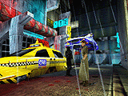
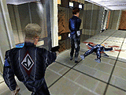
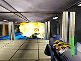
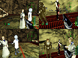

1999 Rare． 1999 Rare．Rareware Logo is a trademark of Rare． |
||||
|
|
1999 Rare． Rareware Logo is a trademark of Rare． |
||||
|
| 舞台は西暦2023年、秘密のプロジェクトを行う「データダイン・コーポレーション」社。世界に名高い科学者が救助信号を送っている…。それに応えるべく、特殊捜査員「ジョアンナ・ダーク」が救助に任命された。単純な救助任務のはずが世界的規模の陰謀工作にまき込まれてしまう…。 |
|  | ■直感、本能、素早い思考力、密かに忍び込む技術、このゲームではこれらが求められる！ |
|  | ■プレイヤーをあざむく様な動きをみせる敵キャラAIは、かつての64ゲームになかった程のすごいできだ！ |
|  | ■ライティングの美しさ、爆発やほこり、蒸気、レンズフレアなどのエフェクトが超リアル！ |
|  | ■もちろん対戦プレイ可能。しかもGBポケットカメラで撮った顔写真をキャラクターに貼れる画期的システムにも期待大！ |